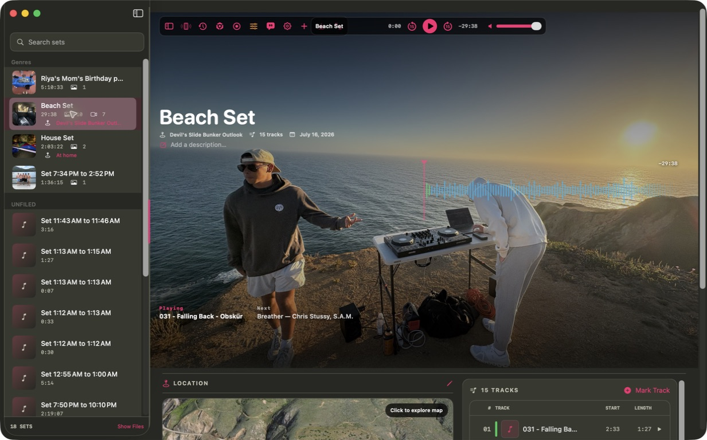
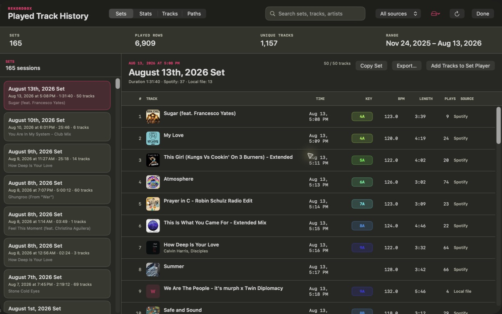

Native macOS + iPhone app
Your DJ sets,
remembered.
Set Player connects the recording to everything that made it matter—Rekordbox history, the exact tracklist, the waveform, the photos, and the place.

Scroll through the workflow
01 / 04
Rekordbox integration
Connect to
Rekordbox history.
Read local play history and turn each session into a timed tracklist.

App audioGoogle ChromeReady
Recorded setsBeach Set29:38 · MP3
Now playingFalling BackObskür
02:3303:59
Set Player18 sets
Set PlayerSynced just now
Now availableBeach Set29:38 · 15 tracks
House Set2:03:22 · 42 tracks
Birthday Party5:10:33 · 61 tracks
✓Library syncedRecordings, artwork, and tracklists
Rekordbox historySet Player workflow
Set Player 1.0
Give every set
somewhere to live.
Download the native Apple silicon build or explore the complete source.
Ad-hoc signed preview · iPhone target available from source